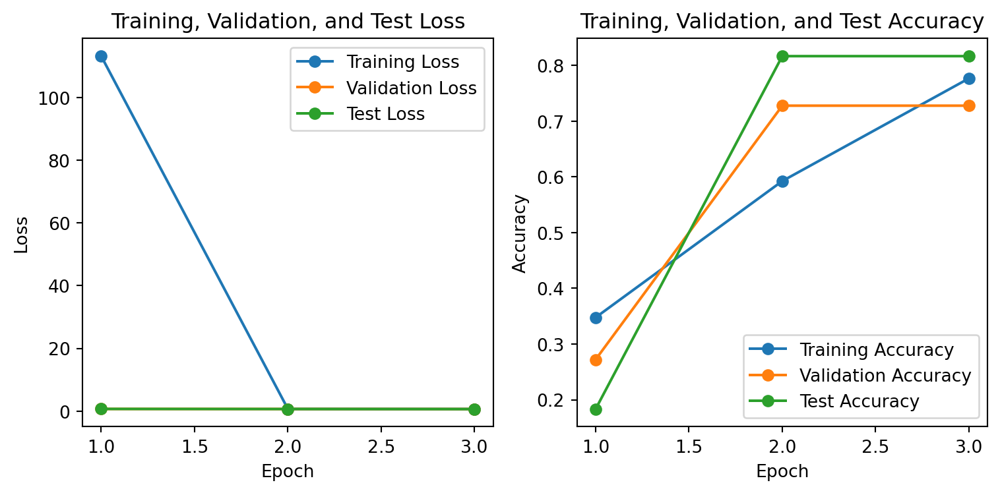

import pandas as pd
import spacy
import matplotlib.pyplot as plt
import torch
import torch.nn as nn
import torch.optim as optim
from torch.utils.data.sampler import RandomSampler, SequentialSampler
from transformers import BertTokenizer, PreTrainedModel, PretrainedConfig
from sources.prepare import extract_country_entities, split_data
from sources.preprocess import preprocess_dataset, get_dataloader
from sources.model import PubMLPConfig, PubMLP, train_model, test_model
from sources.plot import plot_results
import warningsPubMLP: Automatic Publication Classifier
Pre-trained model and code for PubMLP at the following locations:
warnings.filterwarnings('ignore',category=FutureWarning)
# Load data
data_file_path = './files/data.csv'
data = pd.read_csv(data_file_path)
# create a new 'Country' column
ner_model = spacy.load('en_core_web_sm')
data['Country'] = data['C1'].apply(lambda x: extract_country_entities(x, ner_model))
# Select relevant columns
raw_df = data[['UT', 'included', 'single_case', 'technology_use',
'PY', 'AF', 'TI', 'AB', 'DE', 'ID', 'SO', 'CR', 'Country']]
raw_df = raw_df.copy()
# Convert PY (publication year) to numeric format
raw_df['PY'] = pd.to_numeric(raw_df['PY'], errors='coerce')
# Check columns with text data
# print(raw_df.describe(include=object))
# Check columns with numeric data
# print(raw_df.describe())
missing_values = raw_df.isnull().sum()
print(missing_values)
df = raw_df.copy()
# Replace missing values
df.dropna(subset=['PY'], inplace=True)
train_df, valid_df, test_df = split_data(df)
print(f"Training data number: {len(train_df)}")
print(f"Validation data number: {len(valid_df)}")
print(f"Testing data number: {len(test_df)}")
# Save data to CSV files
train_df.to_excel('./files/train_data.xlsx', index=False)
valid_df.to_excel('./files/valid_data.xlsx', index=False)
test_df.to_excel('./files/test_data.xlsx', index=False)UT 0
included 0
single_case 0
technology_use 0
PY 2
AF 0
TI 0
AB 0
DE 311
ID 201
SO 0
CR 7
Country 0
dtype: int64
Training data number: 1438
Validation data number: 180
Testing data number: 180# Set up settings for reproducible results
torch.backends.cudnn.deterministic = True
random_seed = 2023
torch.manual_seed(random_seed)
device = 'cuda' if torch.cuda.is_available() else 'cpu'
# Load the BERT tokenizer
print('Loading BERT tokenizer...')
tokenizer = BertTokenizer.from_pretrained('bert-base-uncased', do_lower_case=True)
# Define column lists
col_lists = {
'text_cols': ['AF', 'TI', 'AB', 'DE', 'ID', 'SO', 'CR', 'Country'],
'categorical_cols': ['single_case', 'technology_use'],
'numerical_cols': ['PY'],
'label_col': ['included']
}
# Preprocess and create dataloaders
train_dataset = preprocess_dataset(train_df, tokenizer, device, col_lists)
train_dataloader = get_dataloader(train_dataset, RandomSampler, batch_size=32)
valid_dataset = preprocess_dataset(valid_df, tokenizer, device, col_lists)
valid_dataloader = get_dataloader(valid_dataset, SequentialSampler, batch_size=32)
test_dataset = preprocess_dataset(test_df, tokenizer, device, col_lists)
test_dataloader = get_dataloader(test_dataset, SequentialSampler, batch_size=32)
print(train_dataset[0])Loading BERT tokenizer...
(tensor([1.0100e+02, 1.5540e+04, 5.8040e+03, ..., 0.0000e+00, 1.0000e+00,
2.0190e+03]), tensor([1., 0.]))# Load the PubMLP model
config = PubMLPConfig()
model = PubMLP(config).to(device)
criterion = nn.CrossEntropyLoss()
optimizer = optim.Adam(model.parameters(), lr=0.001)
epochs = 5
# Train the model and perform validation
training_losses, validation_losses, training_accuracies, validation_accuracies, best_val_loss, best_model_state = train_model(
model, train_dataloader, valid_dataloader, criterion, optimizer, device, epochs)
torch.save(best_model_state, 'best_pubmlp_model.pth')
model.load_state_dict(torch.load('best_pubmlp_model.pth'))
# Test PubMLP
test_loss, test_accuracy = test_model(model, test_dataloader, criterion, device)plot_results(training_losses, validation_losses, test_loss, training_accuracies, validation_accuracies, test_accuracy, best_val_loss)